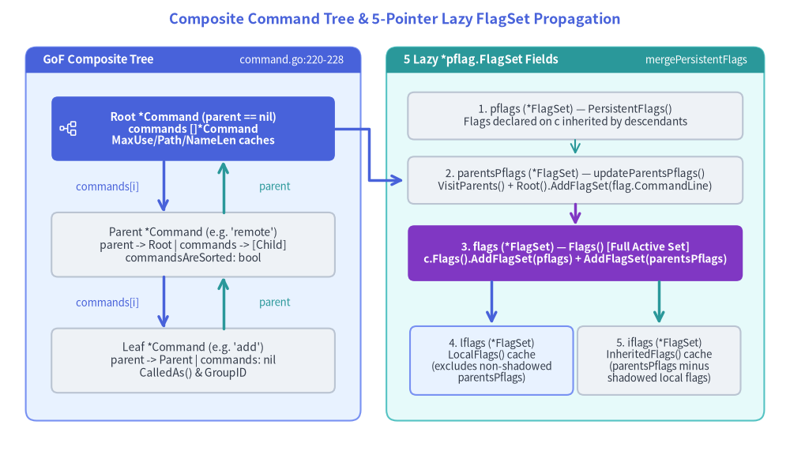
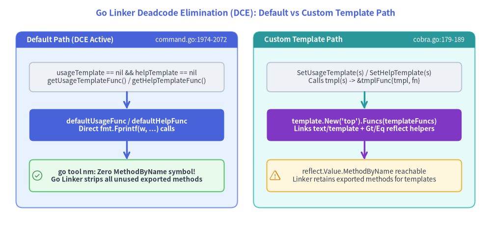

Composite Command Tree & FlagSet Lazy Allocation Internals
Cobra models an entire CLI application—its root binary, nested subcommand hierarchies, help topics, and flag scopes—using a single self-referential struct: cobra.Command (command.go:54–260). Rather than splitting "RootApp", "CommandGroup", and "LeafAction" into separate Go types, Command implements the Gang of Four (GoF) Composite Pattern, paired with five lazily allocated *pflag.FlagSet pointers and a reflection-free default help/usage renderer that preserves Go linker deadcode elimination (TestDeadcodeElimination).

Source Code
from drawlib.canvas import save, setup
from drawlib.icons import phosphor
from drawlib.lines import line, lines
from drawlib.shapes import rectangle
from drawlib.smartarts import Panel
from drawlib.styles import Styles
from drawlib.text import text
setup(width=184, height=106)
text(
(92, 101.5),
"Composite Command Tree & 5-Pointer Lazy FlagSet Propagation",
style=Styles.PrimaryBold.patch(text_size=13.0),
)
# Left Panel: GoF Composite Tree Topology
Panel(
"GoF Composite Tree",
"command.go:220-228",
style=Styles.PrimaryNeutral,
header_style=Styles.PrimaryFlat,
text_style=Styles.WhiteBold.patch(text_size=10.5),
description_style=Styles.White.patch(text_size=9.5),
header_height=6.0,
).draw((6, 8), width=78, height=87)
rectangle(
(45, 76),
width=66,
height=15,
style=Styles.PrimaryFlat.patch(shape_r=1.5),
text="Root *Command (parent == nil)\ncommands []*Command\nMaxUse/Path/NameLen caches",
text_style=Styles.WhiteBold.patch(text_size=10.0),
)
phosphor.tree_structure((16, 76), width=4.5, style=Styles.White)
rectangle(
(45, 49),
width=66,
height=15,
style=Styles.Neutral.patch(shape_r=1.5),
text="Parent *Command (e.g. 'remote')\nparent -> Root | commands -> [Child]\ncommandsAreSorted: bool",
text_style=Styles.Dark.patch(text_size=10.0),
)
rectangle(
(45, 22),
width=66,
height=15,
style=Styles.Neutral.patch(shape_r=1.5),
text="Leaf *Command (e.g. 'add')\nparent -> Parent | commands: nil\nCalledAs() & GroupID",
text_style=Styles.Dark.patch(text_size=10.0),
)
# Bidirectional parent / commands pointers
line((38, 68.5), (38, 56.5), arrow_head="->", style=Styles.PrimaryBold)
text((25, 62.5), "commands[i]", style=Styles.Primary.patch(text_size=9.5))
line((52, 56.5), (52, 68.5), arrow_head="->", style=Styles.SecondaryBold)
text((64, 62.5), "parent", style=Styles.Secondary.patch(text_size=9.5))
line((38, 41.5), (38, 29.5), arrow_head="->", style=Styles.PrimaryBold)
text((25, 35.5), "commands[i]", style=Styles.Primary.patch(text_size=9.5))
line((52, 29.5), (52, 41.5), arrow_head="->", style=Styles.SecondaryBold)
text((64, 35.5), "parent", style=Styles.Secondary.patch(text_size=9.5))
# Right Panel: 5 Lazy *pflag.FlagSet Pointers & mergePersistentFlags()
Panel(
"5 Lazy *pflag.FlagSet Fields",
"mergePersistentFlags",
style=Styles.SecondaryNeutral,
header_style=Styles.SecondaryFlat,
text_style=Styles.WhiteBold.patch(text_size=10.5),
description_style=Styles.White.patch(text_size=9.5),
header_height=6.0,
).draw((90, 8), width=88, height=87)
rectangle(
(134, 79),
width=78,
height=11,
style=Styles.Neutral.patch(shape_r=1.5),
text="1. pflags (*FlagSet) — PersistentFlags()\nFlags declared on c inherited by descendants",
text_style=Styles.Dark.patch(text_size=9.8),
)
rectangle(
(134, 64),
width=78,
height=11,
style=Styles.Neutral.patch(shape_r=1.5),
text="2. parentsPflags (*FlagSet) — updateParentsPflags()\nVisitParents() + Root().AddFlagSet(flag.CommandLine)",
text_style=Styles.Dark.patch(text_size=9.8),
)
rectangle(
(134, 47),
width=78,
height=13,
style=Styles.AccentFlat.patch(shape_r=1.5),
text="3. flags (*FlagSet) — Flags() [Full Active Set]\nc.Flags().AddFlagSet(pflags) + AddFlagSet(parentsPflags)",
text_style=Styles.WhiteBold.patch(text_size=9.8),
)
rectangle(
(114.5, 22),
width=38,
height=16,
style=Styles.PrimaryNeutral.patch(shape_r=1.5),
text="4. lflags (*FlagSet)\nLocalFlags() cache\n(excludes non-shadowed\nparentsPflags)",
text_style=Styles.Dark.patch(text_size=9.5),
)
rectangle(
(153.5, 22),
width=38,
height=16,
style=Styles.Neutral.patch(shape_r=1.5),
text="5. iflags (*FlagSet)\nInheritedFlags() cache\n(parentsPflags minus\nshadowed local flags)",
text_style=Styles.Dark.patch(text_size=9.5),
)
line((134, 73.5), (134, 70), arrow_head="->", style=Styles.Secondary)
line((134, 58.5), (134, 53.5), arrow_head="->", style=Styles.AccentBold)
line((114.5, 40.5), (114.5, 30.5), arrow_head="->", style=Styles.PrimaryBold)
line((153.5, 40.5), (153.5, 30.5), arrow_head="->", style=Styles.SecondaryBold)
lines([(78, 76), (86, 76), (86, 64), (94, 64)], arrow_head="->", style=Styles.PrimaryBold)
save()
1. GoF Composite Pattern in cobra.Command
In command.go:220–228, every Command instance embeds both upward and downward tree pointers alongside precomputed column-width caches:
// command.go:210-228
commandsAreSorted bool
commandCalledAs struct {
name string
called bool
}
ctx context.Context
commands []*Command // Child subcommands
parent *Command // Upward parent pointer (nil on Root)
commandsMaxUseLen int
commandsMaxCommandPathLen int
commandsMaxNameLen int
1.1 Tree Mutation Invariants (AddCommand, RemoveCommand, ResetCommands)
When subcommands are attached via c.AddCommand(cmds ...*Command) (command.go:1342–1368), Cobra enforces four structural invariants:
- Self-Insertion Cycle Guard (
command.go:1344–1346):- Checks
if cmds[i] == c { panic("Command can't be a child of itself") }before mutating pointers, preventing trivial 1-cycle infinite recursion inRoot()orVisitParents().
- Checks
- Upward Link & Padding Cache Update (
command.go:1347–1360):- Sets
cmds[i].parent = cand eagerly updates three high-water-mark integers on the parentc:commandsMaxUseLen = max(commandsMaxUseLen, len(x.Use))commandsMaxCommandPathLen = max(commandsMaxCommandPathLen, len(x.CommandPath()))commandsMaxNameLen = max(commandsMaxNameLen, len(x.Name()))
- Note that
x.CommandPath()(command.go:1465–1470) recursively walksc.Parent().CommandPath() + " " + c.Name()up toDisplayName()on the root node, so callingAddCommandaftercmds[i].parent = ccomputes the full path length in a single pass. - During help rendering,
UsagePadding(),CommandPathPadding(), andNamePadding()(command.go:560–588) clamp these parent caches against minimum column widths (minUsagePadding = 25,minCommandPathPadding = 11,minNamePadding = 11) and pass them torpad(s, padding)(cobra.go:174–177).
- Sets
- Global Normalization Function Cascade (
command.go:1362–1364):- If the parent has
c.globNormFunc != nil,AddCommandimmediately propagatesx.SetGlobalNormalizationFunc(c.globNormFunc)(command.go:382–390) down the newly attached subtree.
- If the parent has
- Deferred Lexicographical Sorting (
command.go:1332–1339, 1366):AddCommandappendsxtoc.commandsand marksc.commandsAreSorted = false.- Sorting is deferred until
c.Commands()is called (e.g., during help generation, completion, orcobra/doctraversal). IfEnableCommandSorting(cobra.go:59,trueby default) is enabled and!c.commandsAreSorted,c.Commands()sortsc.commandsin-place viasort.Sort(commandSorterByName(c.commands))(command.go:1325–1337) and flipsc.commandsAreSorted = true.
Conversely, c.RemoveCommand(cmds ...*Command) (command.go:1401–1432) clears command.parent = nil on removed children, rebuilds the c.commands slice, and recomputes commandsMaxUseLen, commandsMaxCommandPathLen, and commandsMaxNameLen from scratch over the remaining children.
1.2 Upward Tree Walkers & Stream Inheritance
Because only the root Command typically configures I/O streams, templates, or error callbacks, upward lookup methods walk the parent chain until a non-nil override is found or fall back to root defaults:
| Accessor / Walker | Source Location | Traversal Direction & Fallback Behavior |
|---|---|---|
c.Root() |
command.go:892–897 |
Recursive c.Parent().Root() until !c.HasParent(); returns highest ancestor. |
c.VisitParents(fn) |
command.go:884–889 |
Calls fn(c.Parent()) then recurses c.Parent().VisitParents(fn) upward to root. |
c.CommandPath() |
command.go:1465–1470 |
Recursively prefixes c.Parent().CommandPath() + " " + c.Name(); root uses c.DisplayName(). |
c.getOut(def) / getErr / getIn |
command.go:412–440 |
Returns c.outWriter (errWriter, inReader) if non-nil, else recurses to c.parent, falling back to os.Stdout / os.Stderr / os.Stdin. |
c.UsageFunc() / HelpFunc() / FlagErrorFunc() |
command.go:444–558 |
Checks c.usageFunc (helpFunc, flagErrorFunc), else delegates to c.Parent(), falling back to defaultUsageFunc / defaultHelpFunc. |
c.ErrPrefix() |
command.go:643–652 |
Returns c.errPrefix if non-empty, else walks c.parent.ErrPrefix(), defaulting to "Error:". |
2. The Five Lazy *pflag.FlagSet Pointers
A Command node does not allocate any pflag.FlagSet when instantiated as &cobra.Command{Use: "..."}. Instead, Command holds five *flag.FlagSet fields (command.go:155–166) plus a shared flagErrorBuf *bytes.Buffer (command.go:154):
| Field | Public Accessor | Allocation & Population Mechanics (command.go:1688–1923) |
|---|---|---|
flags |
c.Flags() (L1688–1698) |
The complete active FlagSet parsed during c.ParseFlags(args). Lazily allocated via flag.NewFlagSet(c.DisplayName(), flag.ContinueOnError) with output piped to c.flagErrorBuf. After mergePersistentFlags(), contains local flags + pflags + parentsPflags. |
pflags |
c.PersistentFlags() (L1775–1784) |
Persistent flags declared directly on c. Lazily allocated on first call to c.PersistentFlags(). Propagated to c and all descendants. |
parentsPflags |
(internal) c.updateParentsPflags() (L1907–1923) |
Accumulator for all ancestor persistent flags. Lazily allocated with SortFlags = false; populated by copying flag.CommandLine into c.Root().PersistentFlags() and walking c.VisitParents to add each ancestor's PersistentFlags(). |
lflags |
c.LocalFlags() / c.NonInheritedFlags() (L1716–1740, 1770) |
Read-only view cache of flags defined locally on c (both local-only and persistent flags declared on c). Calls c.mergePersistentFlags(), then visits c.Flags() and c.PersistentFlags(), adding f to c.lflags only if f != c.parentsPflags.Lookup(f.Name) (which preserves local flags that shadow a parent persistent flag of the same name!). |
iflags |
c.InheritedFlags() (L1744–1766) |
Read-only view cache of flags inherited from ancestors. Calls c.mergePersistentFlags(), computes local := c.LocalFlags(), and visits c.parentsPflags, adding f to c.iflags only if local.Lookup(f.Name) == nil (excluding shadowed flags). |
[!IMPORTANT] Six Distinct FlagSet Methods (
LocalFlagsvsLocalNonPersistentFlags): Whilec.LocalFlags()(and its aliasc.NonInheritedFlags()) includes persistent flags declared directly onc,c.LocalNonPersistentFlags()(command.go:1702–1712) allocates a freshFlagSetand filtersc.LocalFlags()to exclude any flag present inc.PersistentFlags(). The Completion V2 engine (completions.go:504) relies onLocalNonPersistentFlags()to detect whether a non-persistent local flag was already typed on a parent command whenTraverseChildrenisfalse.
2.1 How mergePersistentFlags() Works Without Eager Tree Walks
When a user defines rootCmd.PersistentFlags().StringP("config", "c", "", "...") in init(), Cobra does not push that flag down to child commands immediately—in fact, child commands might not even be attached via AddCommand yet. Instead, Cobra pulls persistent flags lazily via c.mergePersistentFlags() (command.go:1898–1923):
// command.go:1898-1923
func (c *Command) mergePersistentFlags() {
c.updateParentsPflags()
c.Flags().AddFlagSet(c.PersistentFlags())
c.Flags().AddFlagSet(c.parentsPflags)
}
func (c *Command) updateParentsPflags() {
if c.parentsPflags == nil {
c.parentsPflags = flag.NewFlagSet(c.DisplayName(), flag.ContinueOnError)
c.parentsPflags.SetOutput(c.flagErrorBuf)
c.parentsPflags.SortFlags = false
}
if c.globNormFunc != nil {
c.parentsPflags.SetNormalizeFunc(c.globNormFunc)
}
c.Root().PersistentFlags().AddFlagSet(flag.CommandLine)
c.VisitParents(func(parent *Command) {
c.parentsPflags.AddFlagSet(parent.PersistentFlags())
})
}
Because pflag.FlagSet.AddFlagSet() ignores flags whose Name is already registered in the destination FlagSet, calling c.Flags().AddFlagSet(c.PersistentFlags()) followed by c.Flags().AddFlagSet(c.parentsPflags) guarantees a strict 3-tier precedence order:
- Local flags registered directly on
c.Flags()win first. - Self-persistent flags on
c.PersistentFlags()win second. - Nearest-ancestor persistent flags win over distant ancestors because
c.VisitParents()walks upward fromc.Parent()toc.Root()(including standard librarypflag.CommandLineflags bridged atL1918).
3. Preserving Go Linker Deadcode Elimination (TestDeadcodeElimination)
One of the most subtle architectural designs in command.go and cobra.go is how Cobra supports customizable text/template strings (SetUsageTemplate, SetHelpTemplate, SetVersionTemplate) without breaking the Go compiler linker's deadcode elimination pass for standard CLI binaries.

Source Code
from drawlib.canvas import save, setup
from drawlib.icons import phosphor
from drawlib.lines import line
from drawlib.shapes import rectangle
from drawlib.smartarts import Panel
from drawlib.styles import Styles
from drawlib.text import text
setup(width=184, height=86)
text(
(92, 81),
"Go Linker Deadcode Elimination (DCE): Default vs Custom Template Path",
style=Styles.PrimaryBold.patch(text_size=12.5),
)
# Left Panel: Default Fast Path (DCE Preserved)
Panel(
"Default Path (DCE Active)",
"command.go:1974-2072",
style=Styles.PrimaryNeutral,
header_style=Styles.PrimaryFlat,
text_style=Styles.WhiteBold.patch(text_size=10.5),
description_style=Styles.White.patch(text_size=9.5),
header_height=6.0,
).draw((6, 8), width=83, height=66)
rectangle(
(47.5, 57),
width=73,
height=11,
style=Styles.Neutral.patch(shape_r=1.5),
text="usageTemplate == nil && helpTemplate == nil\ngetUsageTemplateFunc() / getHelpTemplateFunc()",
text_style=Styles.Dark.patch(text_size=9.8),
)
rectangle(
(47.5, 39),
width=73,
height=12,
style=Styles.PrimaryFlat.patch(shape_r=1.5),
text="defaultUsageFunc / defaultHelpFunc\nDirect fmt.Fprintf(w, ...) calls",
text_style=Styles.WhiteBold.patch(text_size=10.0),
)
rectangle(
(47.5, 20),
width=73,
height=12,
style=Styles.SuccessNeutral.patch(shape_r=1.5),
text="go tool nm: Zero MethodByName symbol!\nGo Linker strips all unused exported methods",
text_style=Styles.DarkBold.patch(text_size=9.8),
)
phosphor.check_circle((14, 20), width=4.5, style=Styles.Success)
line((47.5, 51.5), (47.5, 45), arrow_head="->", style=Styles.PrimaryBold)
line((47.5, 33), (47.5, 26), arrow_head="->", style=Styles.PrimaryBold)
# Right Panel: Custom Template Path (Reflection Linked)
Panel(
"Custom Template Path",
"cobra.go:179-189",
style=Styles.SecondaryNeutral,
header_style=Styles.SecondaryFlat,
text_style=Styles.WhiteBold.patch(text_size=10.5),
description_style=Styles.White.patch(text_size=9.5),
header_height=6.0,
).draw((95, 8), width=83, height=66)
rectangle(
(136.5, 57),
width=73,
height=11,
style=Styles.Neutral.patch(shape_r=1.5),
text="SetUsageTemplate(s) / SetHelpTemplate(s)\nCalls tmpl(s) -> &tmplFunc{tmpl, fn}",
text_style=Styles.Dark.patch(text_size=9.8),
)
rectangle(
(136.5, 39),
width=73,
height=12,
style=Styles.AccentFlat.patch(shape_r=1.5),
text="template.New('top').Funcs(templateFuncs)\nLinks text/template + Gt/Eq reflect helpers",
text_style=Styles.WhiteBold.patch(text_size=10.0),
)
rectangle(
(136.5, 20),
width=73,
height=12,
style=Styles.WarningNeutral.patch(shape_r=1.5),
text="reflect.Value.MethodByName reachable\nLinker retains exported methods for templates",
text_style=Styles.Dark.patch(text_size=9.8),
)
phosphor.warning((103, 20), width=4.5, style=Styles.Warning)
line((136.5, 51.5), (136.5, 45), arrow_head="->", style=Styles.SecondaryBold)
line((136.5, 33), (136.5, 26), arrow_head="->", style=Styles.AccentBold)
save()
3.1 Why text/template Disables Linker Deadcode Elimination
In Go's toolchain (cmd/link), the linker performs reachability analysis starting from main.main() to discard unreferenced functions and struct methods. However, if any reachable function in the call graph invokes reflect.Value.MethodByName or reflect.Value.Method, the linker cannot statically prove which exported struct methods might be called dynamically by name at runtime, forcing it to retain exported methods on reachable types across the binary.
Because Go's standard text/template package evaluates expressions like {{.UseLine}} or {{.LocalFlags.FlagUsages}} using reflect.Value.MethodByName, calling template.New(...).Execute(...) inside Cobra's default --help path would force MethodByName into every Cobra CLI binary (kubectl, hugo, gh, docker).
3.2 The tmplFunc Wrapper & defaultUsageFunc Sync Pattern
To prevent text/template from being reachable by default (PR #1956, verified by TestDeadcodeElimination in cobra_test.go:245–301), Cobra uses a two-part indirection:
tmplFuncClosure Wrapper (command.go:1937–1940,cobra.go:179–189):- Instead of storing a
*template.TemplateonCommand,usageTemplate,helpTemplate, andversionTemplatehave type*tmplFunc:type tmplFunc struct { tmpl string fn func(io.Writer, interface{}) error } - The
tmpl(text string) *tmplFuncconstructor (cobra.go:179–189) that actually callstemplate.New("top").Funcs(templateFuncs)andt.Execute(w, data)is only invoked insideSetUsageTemplate,SetHelpTemplate, andSetVersionTemplate(command.go:318–373).
- Instead of storing a
- Reflection-Free Default Functions (
command.go:1974–2072):- When
c.usageTemplate == nil,c.getUsageTemplateFunc()(command.go:464–473) returnsdefaultUsageFunc(command.go:1974–2040), which is a pure Go function usingfmt.Fprint/fmt.Fprintfthat produces output byte-for-byte identical todefaultUsageTemplate(command.go:1942–1971). - Similarly,
getHelpTemplateFunc()returnsdefaultHelpFunc(command.go:2047–2062) andgetVersionTemplateFunc()returnsdefaultVersionFunc(command.go:2068–2072). TestDeadcodeElimination(cobra_test.go:245–301) compiles a minimal Cobra program withgo buildand runsgo tool nmon the resulting binary, failing the test suite if"MethodByName"appears anywhere in the symbol table.
- When
Next Steps
- Continue to Chapter 2 — Find, Traverse & stripFlags Parser to see how Cobra resolves subcommands from raw
os.Args[1:]tokens without mutatingFlagSetstate. - Return to the Architecture Overview.